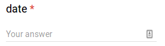
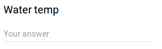
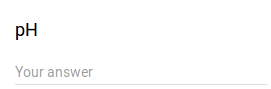
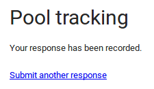
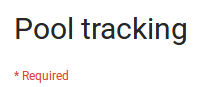
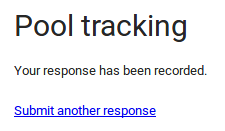
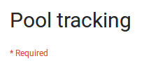

#https://docs.google.com/forms/d/e/1FAIpQLSfLB0U65q0xK92yFbd_pRKqVL6fhMX3Iw2IxNiJKgsoxDg9IQ/viewform?usp=sf_link
#
#Until now, we've used the same values for each entry. Using
#the capabilities of python, we can specify values
#that we want to use.
#
#There are lots of ways to do this, here is one.
dateList=[ "01/01/2017", "01/02/2017", "01/03/2017"]
tempList=["70","71","72"]
i=0
while i<3:
print "filling form ", i
type(Pattern().similar(0.60).targetOffset(-93,20), dateList[i])
type(Pattern().similar(0.43).targetOffset(-69,21), tempList[i]+"\t\t\t\t")
#click(Pattern("1503023876047.png").targetOffset(-16,-6)) #need to fix
type(Pattern().targetOffset(-76,28), "1\t\t")
type(Pattern().targetOffset(-86,21),"2\t\t" )
type(Pattern( ).similar(0.53).targetOffset(-104,18), "3\t\t")
type(Pattern().similar(0.60).targetOffset(-120,20), "4\t\t\t\t\t\t")
#type(Pattern("1503024016342.png").targetOffset(-52,25), "5\t\t") #need to fix
#type(Pattern("1503024030884.png").similar(0.58).targetOffset(-91,22), "6\t\t") #need to fix
type(Pattern().similar(0.51).targetOffset(-95,21), "7\t\t")
type(Pattern().similar(0.63).targetOffset(-86,23), "8\t\t")
click()
wait(Pattern().similar(0.48))
click()
wait()
i=i+1
).similar(0.53).targetOffset(-104,18), "3\t\t")
type(Pattern().similar(0.60).targetOffset(-120,20), "4\t\t\t\t\t\t")
#type(Pattern("1503024016342.png").targetOffset(-52,25), "5\t\t") #need to fix
#type(Pattern("1503024030884.png").similar(0.58).targetOffset(-91,22), "6\t\t") #need to fix
type(Pattern().similar(0.51).targetOffset(-95,21), "7\t\t")
type(Pattern().similar(0.63).targetOffset(-86,23), "8\t\t")
click()
wait(Pattern().similar(0.48))
click()
wait()
i=i+1